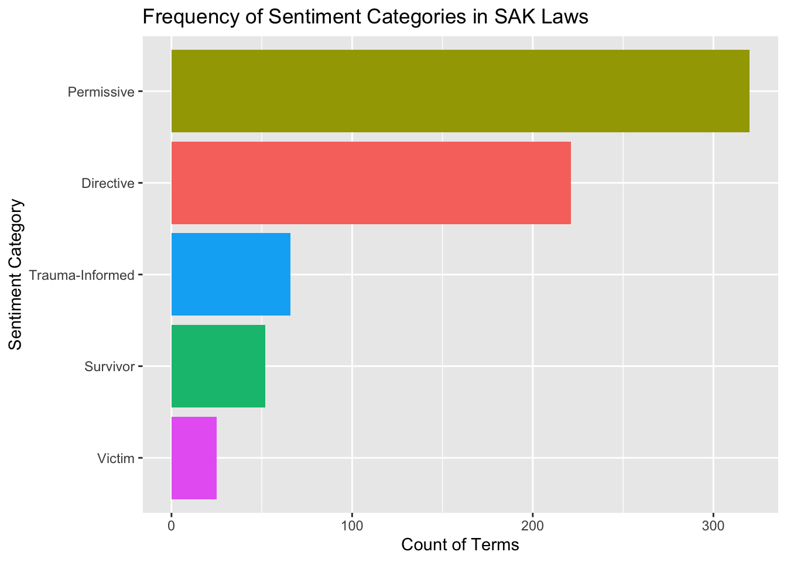
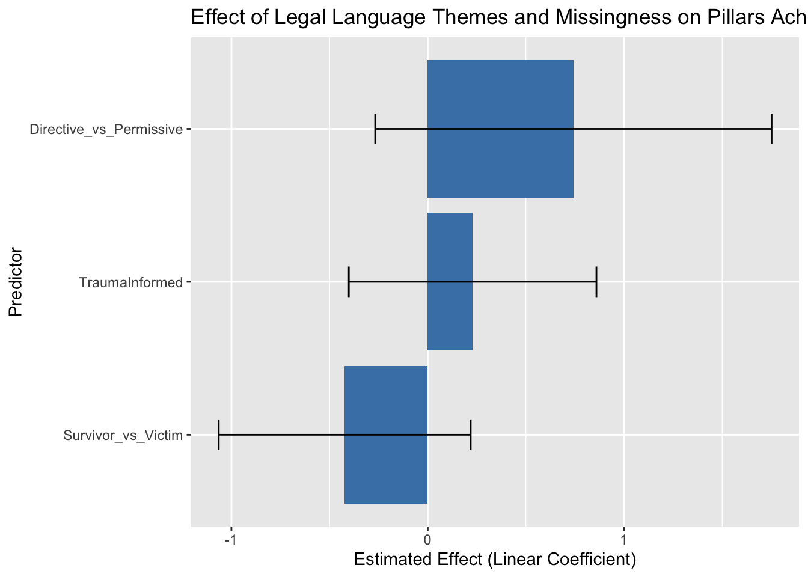

library(tidyverse) # Tools for data wrangling and visualization
library(tidytext) # Tools for working with text data
library(readxl) # For reading Excel files
library(textclean) # For cleaning messy text
library(textshape) # For reshaping and organizing text
library(ggplot2) # For making graphs
library(writexl) # For writing Excel files
library(broom) # For tidying model outputUsing R and ChatGPT for Qualitative Coding of SAK Laws
Background: The History and Discourse of SAK Law Reform
Over the past two decades, the United States has uncovered a disturbing backlog of untested sexual assault kits (SAKs)—forensic evidence collected from survivors of sexual violence. This problem gained national attention in 2009 with the discovery of 11,000 untested kits in a Detroit warehouse, spurring investigations across the country. Root causes included underfunding, a lack of procedural clarity, and systemic disbelief in survivors, particularly from marginalized communities.
In response, federal and state policymakers passed several reforms:
- The Debbie Smith Act (2004) funded DNA evidence testing.
- The SAFER Act (2013) directed 75% of these funds toward SAKs.
- The Sexual Assault Kit Initiative (SAKI, 2015) supported jurisdictions in addressing their backlogs.
Many states followed by enacting laws that mandated testing timelines and survivor notifications.
While this progress is promising, not all states have comprehensive laws. Critically, the way these laws are written may impact how they are implemented and whether they achieve meaningful reform.
Content Analysis in R Using ChatGPT and tidytext
To explore whether the language used in state sexual assault kit (SAK) submission laws affects reform outcomes, I conducted a qualitative content analysis using R and ChatGPT. I followed the 7-step content analysis framework by Bernard, Wutich, and Ryan (2017), which guided the full workflow from formulating a research question to applying codes, analyzing results, and interpreting their meaning.
Step 1: Formulate a Research Question
Do the linguistic themes found in SAK laws predict how many of the 6 End the Backlog pillars a state has achieved?
Step 2: Select a Set of Texts
I compiled a dataset (law_df) that included:
- The State (State)
- The number of End the Backlog pillars achieved by each state (Pillars_Achieved)
- The year the law was passed (Law_Year)
- The name of the law (Law_Name)
- The text of the law (Law_Text)
Step 3: Create a Set of Codes (Themes)
Based on post-structural feminist theory and the Theory of Social Intervention, I created three thematic codes:
Survivor vs. Victim Language: This theme examines how the law constructs individuals who have experienced sexual violence. While “victim” aligns with legal tradition and emphasizes harm, “survivor” foregrounds agency and resilience. Post-structural feminist theory posits that this linguistic distinction shapes institutional and societal responses by framing whose voice is centered.
Trauma-Informed Language: This theme assesses whether a statute acknowledges the emotional and psychological impact of sexual violence. It includes terms such as “trauma-informed,” “victim-centered,” and references to sensitive procedures. Laws that use this language aim to minimize retraumatization and reflect care-based interventions aligned with social intervention theory.
Permissive vs. Directive Language: This theme evaluates whether laws mandate action or offer discretion. For example, “shall submit” reflects directive framing, signaling accountability and uniformity, whereas “may submit” permits variability. Directive language aligns with state efforts to enforce procedural integrity, a key component of successful policy implementation.
With ChatGPT’s assistance, I created a custom sentiment lexicon used for tidytext analysis. The lexicon was iteratively expanded and cleaned based on law-specific language and advocacy literature.
Step 4: Pretest the Variables
Using tidytext and ChatGPT, I coded the first 10 states, compared outputs, and refined the lexicon. I removed problematic terms like “victim” and “shall,” and simplified trauma-informed to a binary presence/absence indicator.
Step 5: Apply the Codes to All Texts
To begin the analysis, I loaded the necessary R packages and set the working directory to where my datasets are stored.
Next, I imported the laws and sentiment lexicon Excel files and cleaned the law text. This included removing special characters, converting text to lowercase, and tokenizing it into individual words.
# 5.1. Load the two datasets: laws and the custom sentiment lexicon
laws <- read_excel("SAK Sub Laws.xlsx")
lexicon <- read_excel("custom_sentiment_lexicon_2.xlsx")
# 5.2. Clean and standardize the text of each law
laws_clean <- laws %>%
mutate(
Law_Text = replace_non_ascii(Law_Text), # Remove strange/non-standard characters
Law_Text = tolower(Law_Text), # Make all text lowercase
Law_Text = str_replace_all(Law_Text, "[^a-z\\s]", " "), # Remove punctuation and numbers
Law_Text = str_squish(Law_Text) # Remove extra spaces between words
)
# 5.3. Break each law into individual words (tokens)
laws_tokenized <- laws_clean %>%
unnest_tokens(output = term, input = Law_Text, token = "words")I then matched the tokenized words from each law with terms in the sentiment lexicon to assign each word a theme-based sentiment label.
# 5.4. Match each word from the laws to a sentiment label in the lexicon
coded_laws <- laws_tokenized %>%
inner_join(lexicon, by = c("term" = "word")) %>% # Only keep words that are in the lexicon
select(State, Pillars_Achieved, Law_Name, Law_Year, term, sentiment)
# 5.5. Count how many times each sentiment appears across all laws
sentiment_counts <- coded_laws %>%
count(sentiment, sort = TRUE)This plot shows the frequency of each sentiment category found across all state laws, giving a sense of which themes are most prevalent.
# 5.6. Visualize the frequency of each sentiment category in a bar chart
ggplot(sentiment_counts, aes(x = reorder(sentiment, n), y = n, fill = sentiment)) +
geom_col(show.legend = FALSE) +
coord_flip() +
labs(title = "Frequency of Sentiment Categories in SAK Laws",
x = "Sentiment Category",
y = "Count of Terms")
I then created binary indicators to represent whether each law used survivor, trauma-informed, or directive language. These were coded as 1 if any words from the corresponding sentiment category were present in the law and 0 if not. This presence/absence approach was used to avoid over-weighting laws with longer text or redundant phrasing and to simplify interpretation in the regression models. For example, a single mention of trauma-informed principles was sufficient to classify a law as trauma-informed. These variables were then merged with the outcome data on pillar achievement.
| Variable | Type | Meaning |
|---|---|---|
| Survivor_vs_Victim | binary | 1 = survivor language present |
| TraumaInformed | binary | 1 = trauma-informed language |
| Directive_vs_Permissive | binary | 1 = directive language |
# 5.7. Count the number of terms in each sentiment category per state and create binary (1/0) indicators for each theme per state
state_summary <- coded_laws %>%
count(State, sentiment) %>%
pivot_wider(names_from = sentiment, values_from = n, values_fill = 0) %>%
mutate(
Survivor_vs_Victim = if_else(Survivor > 0, 1, 0),
TraumaInformed = if_else(`Trauma-Informed` > 0, 1, 0),
Directive_vs_Permissive = case_when(
Directive > 0 ~ 1,
Permissive > 0 ~ 0,
TRUE ~ NA_real_
)
)
# 5.8. Merge theme data with outcomes (Pillars Achieved) for analysis
model_data <- laws_clean %>%
select(State, Pillars_Achieved) %>%
left_join(state_summary, by = "State")This step flags any state that was missing theme coding, which was used as a control variable in the regression models.
# Create a variable indicating if theme data is missing for a state
model_data_prepped <- model_data %>%
mutate(
MissingThemes = if_else(
is.na(Survivor_vs_Victim) | is.na(TraumaInformed) | is.na(Directive_vs_Permissive),
1, 0
)
)Step 6: Create a Case-by-Case Matrix and Step 7: Analyze It
I ran two regression models—one to test the impact of theme presence on reform outcomes, and another to assess whether having a law at all mattered.
# Test the effect of each theme on Pillars Achieved
theme_model <- lm(
Pillars_Achieved ~ Survivor_vs_Victim + TraumaInformed + Directive_vs_Permissive,
data = model_data_prepped
)
summary(theme_model)
Call:
lm(formula = Pillars_Achieved ~ Survivor_vs_Victim + TraumaInformed +
Directive_vs_Permissive, data = model_data_prepped)
Residuals:
Min 1Q Median 3Q Max
-2.2021 -0.6250 0.3750 0.6037 1.3457
Coefficients:
Estimate Std. Error t value Pr(>|t|)
(Intercept) 4.6543 0.4835 9.626 4.17e-11 ***
Survivor_vs_Victim -0.4229 0.3154 -1.341 0.189
TraumaInformed 0.2287 0.3100 0.738 0.466
Directive_vs_Permissive 0.7420 0.4962 1.495 0.144
---
Signif. codes: 0 '***' 0.001 '**' 0.01 '*' 0.05 '.' 0.1 ' ' 1
Residual standard error: 0.9062 on 33 degrees of freedom
(13 observations deleted due to missingness)
Multiple R-squared: 0.146, Adjusted R-squared: 0.06832
F-statistic: 1.88 on 3 and 33 DF, p-value: 0.1522# Test whether missing theme data is related to Pillars Achieved
missingness_only_model <- lm(Pillars_Achieved ~ MissingThemes, data = model_data_prepped)
summary(missingness_only_model)
Call:
lm(formula = Pillars_Achieved ~ MissingThemes, data = model_data_prepped)
Residuals:
Min 1Q Median 3Q Max
-2.4615 -0.4615 0.1206 0.7027 3.5385
Coefficients:
Estimate Std. Error t value Pr(>|t|)
(Intercept) 5.2973 0.1853 28.592 < 2e-16 ***
MissingThemes -2.8358 0.3633 -7.805 4.35e-10 ***
---
Signif. codes: 0 '***' 0.001 '**' 0.01 '*' 0.05 '.' 0.1 ' ' 1
Residual standard error: 1.127 on 48 degrees of freedom
Multiple R-squared: 0.5593, Adjusted R-squared: 0.5501
F-statistic: 60.91 on 1 and 48 DF, p-value: 4.351e-10The chart below visualizes the estimated effect of each language theme on the number of pillars a state has achieved. Error bars represent 95% confidence intervals.
# Plot estimated effect of each theme on Pillars Achieved
tidy(theme_model, conf.int = TRUE) %>% # Get coefficients with confidence intervals
filter(term != "(Intercept)") %>% # Exclude intercept
ggplot(aes(x = reorder(term, estimate), y = estimate)) + # Plot coefficients
geom_col(fill = "steelblue") +
geom_errorbar(aes(ymin = conf.low, ymax = conf.high), width = 0.2) +
coord_flip() +
labs(
title = "Effect of Legal Language Themes and Missingness on Pillars Achieved",
x = "Predictor",
y = "Estimated Effect (Linear Coefficient)"
)
Results Summary
Language Themes Alone Did Not Predict Reform
In the first regression model, I tested whether the presence of survivor-oriented, trauma-informed, or directive language in a state’s SAK law predicted how many of the six End the Backlog pillars the state had achieved. None of the individual themes reached statistical significance at the p < .05 level. However, the direction and magnitude of the coefficients suggest meaningful patterns worth further exploration:
- Directive Language was associated with a positive increase of approximately 0.74 additional pillars. This suggests that laws with more directive mandates may support stronger implementation, potentially by reducing local discretion and encouraging accountability.
- Trauma-Informed Language had a small positive association (+0.23), which aligns with the idea that laws acknowledging survivors’ psychological needs may contribute to more comprehensive reform. However, the estimate was not statistically significant.
- Survivor-Oriented Language was negatively associated with pillar achievement (–0.42), a counterintuitive finding. One explanation could be that such language is more common in symbolic laws passed by states with limited resources or infrastructure for implementation.
The Impact of Not Having a Law at All
In the second model, I examined whether simply having a SAK submission law (regardless of its language) made a difference in pillar adoption. The results were much more robust:
- States with no SAK submission law as of January 2025 had 2.84 fewer pillars achieved on average compared to states with a law.
- This finding was highly statistically significant (p < .001) and accounted for over 55% of the variance in state-level reform progress.
This result underscores the critical role of legislative action itself, even beyond the specifics of language used.
Key Insights
- Passing a law is a necessary step for advancing comprehensive reform.
- The specific wording of laws may still play a role, particularly in the use of directive and trauma-informed language, but more nuanced research is needed.
- Legal language likely interacts with enforcement mechanisms, funding, advocacy, and training efforts—suggesting that language is just one part of a larger ecosystem required to prevent backlogs and support survivors effectively.
Additional Visualizations by Theme
Below are supplementary bar charts that display the most frequently occurring terms within each of the three major themes (Survivor vs. Victim, Trauma-Informed, and Permissive vs. Directive). These plots offer a more granular look at how often specific language is used across state laws and provide further context for interpreting the patterns identified in the sentiment analysis.
- The specific wording of laws may still play a role, particularly in the use of directive and trauma-informed language, but more nuanced research is needed.
- Legal language likely interacts with enforcement mechanisms, funding, advocacy, and training efforts—suggesting that language is just one part of a larger ecosystem required to prevent backlogs and support survivors effectively.
Survivor vs Victim Language
# Filter to only keep words labeled as Survivor or Victim language
survivor_victim_terms <- coded_laws %>%
filter(sentiment %in% c("Survivor", "Victim")) %>%
count(sentiment, term, sort = TRUE)
# View a table of these terms and their counts
print(survivor_victim_terms)# A tibble: 11 × 3
sentiment term n
<chr> <chr> <int>
1 Survivor survivor 38
2 Survivor survivors 10
3 Victim violation 9
4 Victim abuse 8
5 Victim exploitation 3
6 Survivor healing 2
7 Victim complainant 2
8 Victim injury 2
9 Survivor empowered 1
10 Survivor growth 1
11 Victim harassment 1# Create a bar chart comparing the frequency of Survivor vs. Victim terms
ggplot(survivor_victim_terms, aes(x = reorder(term, n), y = n, fill = sentiment)) +
geom_col(show.legend = TRUE, position = "dodge") +
coord_flip() +
labs(
title = "Survivor vs. Victim Language in SAK Laws",
x = "Term",
y = "Frequency",
fill = "Sentiment Category"
)
Trauma-Informed Language
# Keep only terms labeled as Trauma-Informed
trauma_terms <- coded_laws %>%
filter(sentiment %in% c("Trauma-Informed")) %>%
count(sentiment, term, sort = TRUE)
# View the terms and their counts
print(trauma_terms)# A tibble: 4 × 3
sentiment term n
<chr> <chr> <int>
1 Trauma-Informed safety 55
2 Trauma-Informed control 8
3 Trauma-Informed privacy 2
4 Trauma-Informed compassionate 1# Bar chart of Trauma-Informed terms
ggplot(trauma_terms, aes(x = reorder(term, n), y = n, fill = sentiment)) +
geom_col(show.legend = FALSE) +
coord_flip() +
labs(
title = "Trauma-Informed Language in SAK Laws",
x = "Term",
y = "Frequency"
)
Permissive vs Directive Language
# Filter to include only Permissive and Directive language
perm_dir_terms <- coded_laws %>%
filter(sentiment %in% c("Permissive", "Directive")) %>%
count(sentiment, term, sort = TRUE)
# View table of terms
print(perm_dir_terms)# A tibble: 20 × 3
sentiment term n
<chr> <chr> <int>
1 Permissive may 144
2 Directive must 77
3 Permissive request 65
4 Directive required 59
5 Permissive appropriate 58
6 Directive ensure 29
7 Directive requirement 20
8 Permissive allow 14
9 Directive requires 12
10 Permissive should 12
11 Directive will 10
12 Permissive can 10
13 Directive mandatory 8
14 Permissive could 7
15 Directive duty 5
16 Permissive entitled 3
17 Permissive permit 3
18 Permissive authorize 2
19 Permissive encourage 2
20 Directive enforce 1# Bar chart of Permissive vs. Directive language terms
ggplot(perm_dir_terms, aes(x = reorder(term, n), y = n, fill = sentiment)) +
geom_col(show.legend = TRUE, position = "dodge") +
coord_flip() +
labs(
title = "Permissive vs. Directive Language in SAK Laws",
x = "Term",
y = "Frequency",
fill = "Sentiment Category"
)
References
- Bernard, H. R., Wutich, A., & Ryan, G. W. (2017). Analyzing Qualitative Data: Systematic Approaches (2nd ed.). SAGE Publications.
- Silge, J., & Robinson, D. (2017). Text Mining with R: A Tidy Approach. O’Reilly Media.
- End the Backlog. (n.d.). The Six Pillars of Reform. Joyful Heart Foundation. Retrieved from https://www.endthebacklog.org/, H. R., Wutich, A., & Ryan, G. W. (2017). Analyzing Qualitative Data: Systematic Approaches (2nd ed.). SAGE Publications.